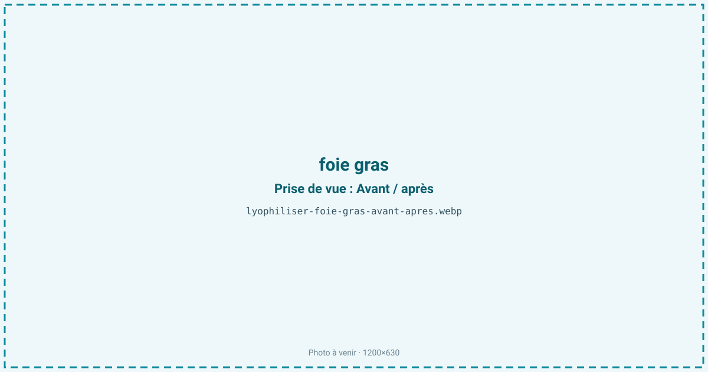
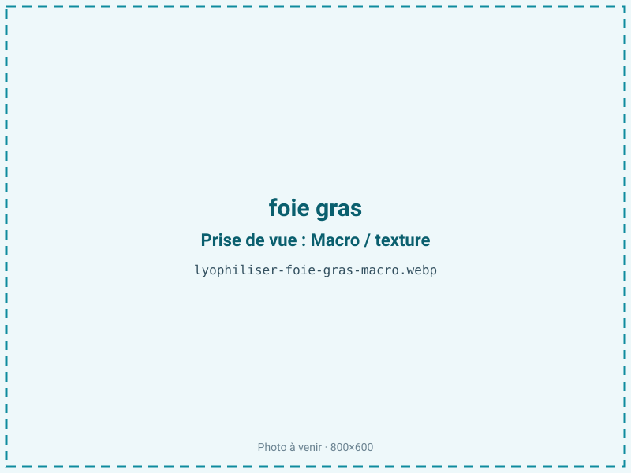
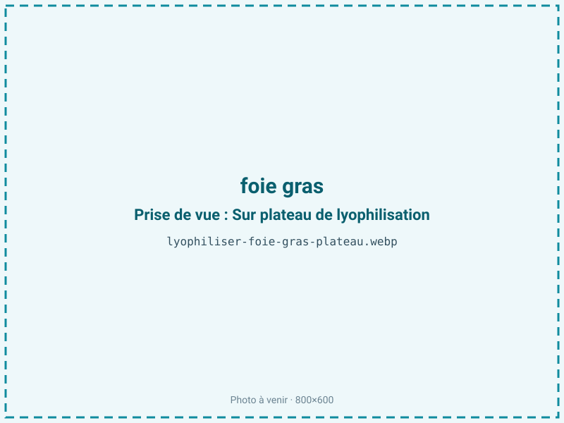
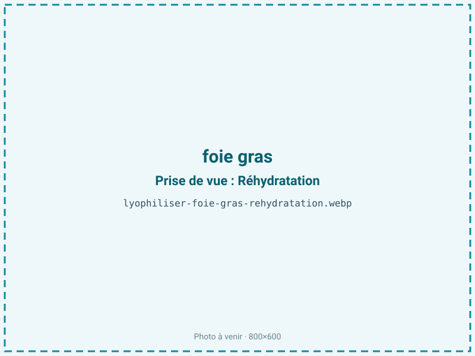

Lyophiliser du foie gras
Le foie gras est un produit noble, cher et fragile, que la chaleur ferait fondre. La lyophilisation en fait des copeaux ou une poudre qui gardent son fondant et sa richesse aromatique, à conserver hors du frais. C'est un ingrédient gastronomique de haute valeur, réservé aux chefs et au snacking premium.

En bref
Comment foie gras se comporte à la lyophilisation
Le foie gras est atypique : environ 50 à 55 % d'eau seulement, mais plus de 40 % de lipides. Ses graisses fondent dès 25 à 35 °C, ce qui interdit tout séchage à chaud — le produit coulerait. Le froid est donc impératif. À la congélation, la matrice se fige ; à la sublimation, l'eau part mais les lipides restent en place, désormais exposés : le produit devient très oxydable, et la texture, une fois l'eau retirée, est friable.
La faible teneur en eau signifie qu'il y a peu à sublimer, mais cette eau est piégée dans une matrice grasse qui ralentit sa migration. On travaille donc à couche fine et à basse température de clayette pour ne jamais approcher le point de fusion des graisses. Le sel et les assaisonnements présents modifient légèrement le comportement thermique.
Paramètres de cycle
Partir d'un mi-cuit tranché à environ 5 mm : c'est le meilleur compromis entre tenue et rapidité. Congeler à −35 °C. En sublimation, garder une clayette basse — ne pas dépasser 25 à 30 °C — pour éviter toute fusion lipidique qui ruinerait le lot. L'a_w cible se situe entre 0,30 et 0,45. C'est un produit très gras : on ne sur-sèche pas. En dessous d'a_w 0,30, on retire la monocouche d'eau protectrice et le rancissement s'emballe. Le critère d'arrêt privilégie donc la stabilité oxydative à la sécheresse maximale.
Pièges connus
- Très riche en lipides : oxydation rapide, barrière + absorbeur indispensables.
- Ne pas sur-sécher, optimum vers aw 0,30–0,45.



Variantes & provenance
Cru, mi-cuit ou cuit, le comportement diffère : le mi-cuit offre le meilleur résultat, le cru étant plus délicat à stabiliser. Le foie d'oie, plus fin et plus gras, se distingue du foie de canard, plus courant et plus marqué en goût. L'assaisonnement (sel, poivre, éventuel alcool comme l'armagnac) influe sur la texture finale et la conservation. Le calibre et la teneur en gras du lobe modulent la durée de cycle.
Conservation & DLUO
Ici, le facteur limitant est sans ambiguïté l'oxydation lipidique, à cause des plus de 40 % de graisses exposées. Le conditionnement barrière avec inertage azote et absorbeur d'oxygène n'est pas une option mais une nécessité. Comptez 4 à 8 mois en sachet simple — court — et 10 à 15 mois en barrière azotée avec absorbeur. Le stockage au frais est fortement recommandé : la vitesse d'oxydation doublant environ tous les 10 °C, quelques degrés en moins prolongent nettement la DLUO. Rappel : ne jamais viser une a_w inférieure à 0,30, qui accélérerait le rancissement.
4 à 8 mois en sachet, 10 à 15 mois en barrière azotée + absorbeur.
Estimez selon votre emballage :
Face aux autres procédés de séchage
Aucun séchage à chaud n'est envisageable : à l'air chaud comme au micro-ondes sous vide, les graisses fondent et le produit prend un goût cuit, perdant tout ce qui fait le foie gras. La lyophilisation est la seule voie qui conserve le fondant et le profil aromatique. C'est un cas où le surcoût énergétique du froid est pleinement justifié par la valeur du produit.
Marchés & applications
Copeaux et poudre de foie gras pour le dressage et l'assaisonnement gastronomique, garnitures de fêtes, inclusions dans des snacks très premium, tuiles et crumbles salés. La clientèle type est la restauration gastronomique, les traiteurs haut de gamme et les épiceries fines.
- Copeaux et poudre de chef
- Assaisonnement gastronomique
Questions fréquentes — foie gras
Pourquoi ne pas sécher le foie gras à chaud ?
Parce que ses graisses fondent dès 25 à 35 °C : au chaud, il coule et prend un goût cuit. Seul le froid préserve le fondant.
Le foie gras lyophilisé fond-il en bouche ?
Oui : la matrice grasse, une fois l'eau retirée, redonne cette sensation fondante caractéristique, sous forme de copeaux ou de poudre.
Quelle est sa durée de conservation ?
4 à 8 mois en sachet simple, mais 10 à 15 mois en barrière azotée avec absorbeur d'oxygène, à cause de sa très forte teneur en lipides.
Faut-il un conditionnement particulier ?
Oui, impérativement : barrière EVOH ou aluminium, azote et absorbeur d'oxygène. Sans cela, l'oxydation est rapide.
Cru ou mi-cuit ?
Le mi-cuit donne le meilleur résultat et la meilleure tenue. Le cru est possible mais plus délicat à stabiliser.
Peut-on le stocker à température ambiante ?
Oui en barrière, mais un stockage au frais prolonge nettement la DLUO, car il ralentit l'oxydation des graisses.
Foie de canard ou d'oie ?
Les deux se lyophilisent ; l'oie, plus fine et plus grasse, demande une vigilance accrue sur l'oxydation.
Prochaine étape : envoyez-nous 200 g
Vous avez les repères du foie gras. La suite logique : nous envoyer un échantillon et repartir avec une fiche technique sur votre produit — rendement, aw finale, coût au kilo.
Tester du foie gras — 250 à 500 €Déductible de votre premier lot.